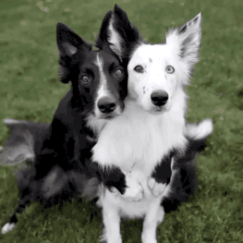
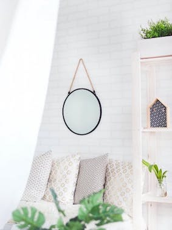
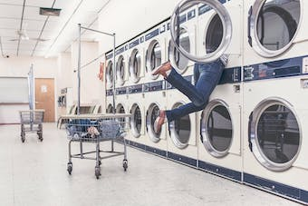
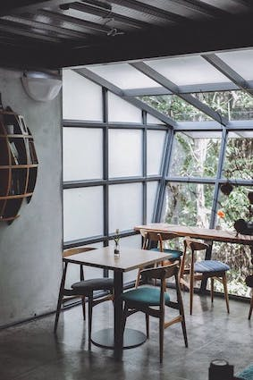
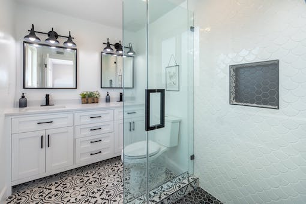

Moje hobby
Psy i inne zwierzęta
Kocham psy i inne zwięrzęta, podobnie jak mój tata i babcia. Moi rodzice
i siostra opiekują się moim psem przygarniętym 15 lat temu z suwalskiego
lasu.
Pies bawi się Beja i jest moim ukochanym psem.
Chciałabym przygarnąć kolejnego psa, niestety właściciele mieszkania
póki co nie wyrazili na to zgody. Może w przyszłości.

Wystrój wnętrz i remonty
Lubię oglądać remonty, zmiany wystroju i inne metamorfozy na HGTV i Domo+. W 2018 roku ukończyłam kurs aranżacji wnętrz przed sprzedażą lub wynajmem - homestagingu. W czasie kwarantanny odnowiłam 2 leżaki za pomocą pędzli, lakierobejcy i oleju lnianego. Przed świętami tworzę wianki.
   